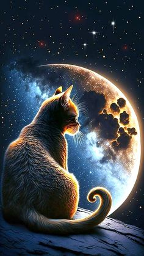
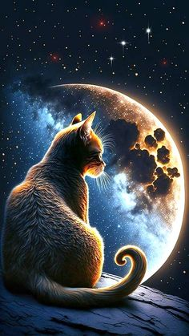

Немного о себе:
 Да, не моё фото, но пока пусть будет так:). Антон, 27 лет, родился в городе Курск. Увлекаюсь программированием, спортом(волейболом, в частности) и рыбалкой, учусь игре на гитаре.
 Да, не моё фото, но пока пусть будет так:). Антон, 27 лет, родился в городе Курск. Увлекаюсь программированием, спортом(волейболом, в частности) и рыбалкой, учусь игре на гитаре.